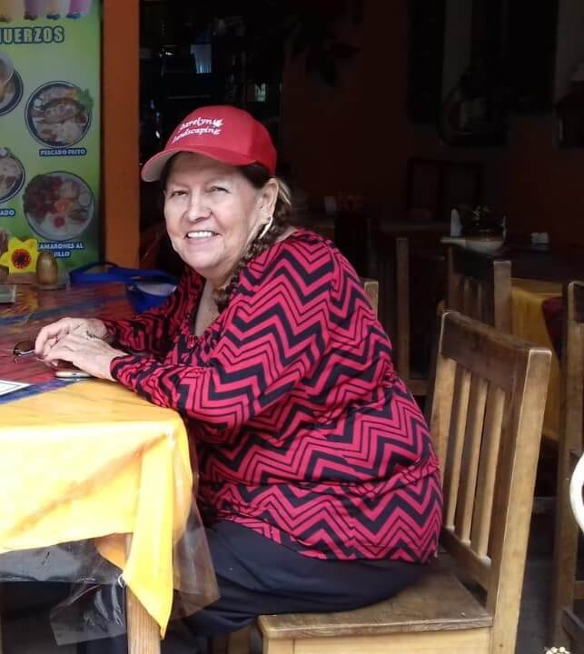
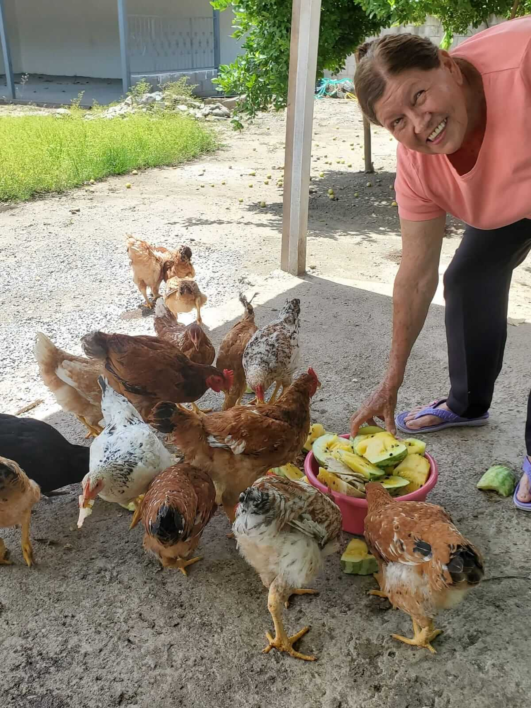
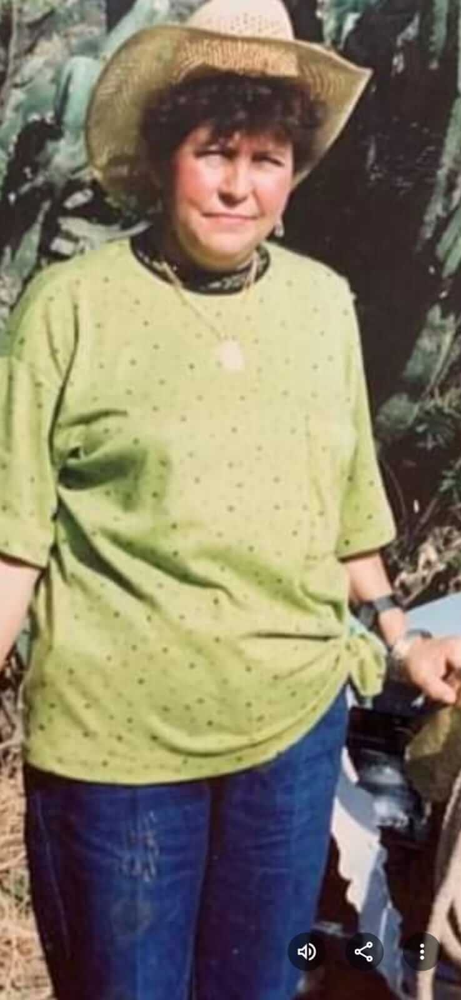
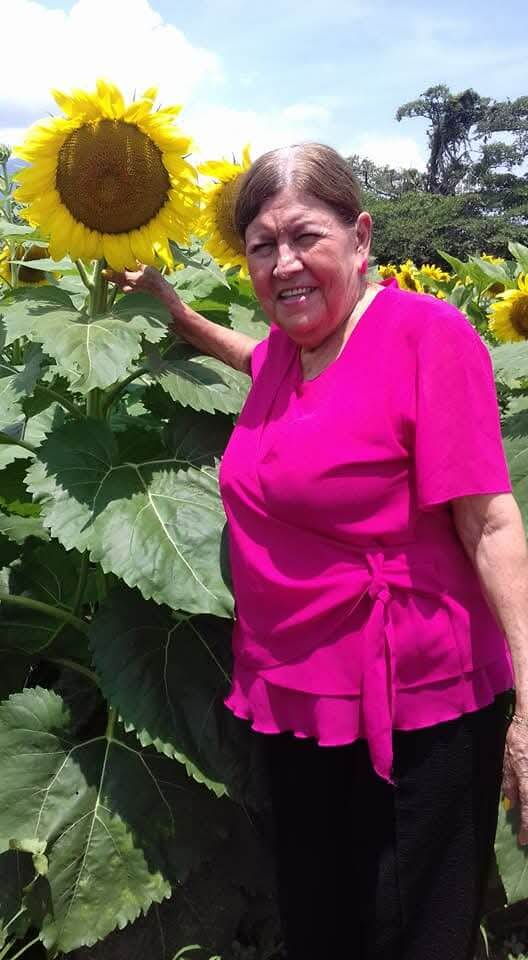
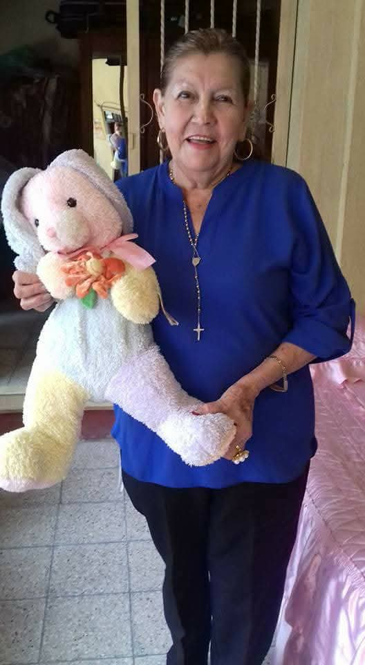

Petrona Paredes Ramírez
“Tonita Paredes”
10 de Febrero, 1948 — 24 de Marzo, 2025
Nuestra Historia
Nació un 10 de febrero 1948 en este hermoso pueblo de Morazan.
Tonita fue una mujer de carácter fuerte, pero a su vez muy noble, trabajadora, responsable, respetuosa, muy carismática y con su sonrisa muy especial.
A lo largo de su vida fue una mujer muy trabajadora, luchó mucho por sacar adelante a sus hijos y siempre ser un ejemplo para ellos de nunca caer ante cualquier adversidad.
Una de sus pasiones era la naturaleza, le encantaba cada mañana levantarse muy temprano, darle gracias a Dios por un nuevo día e ir a sus terrenos, a sembrar flores, árboles frutales, y disfrutar de todo lo que en vida pudo cosechar
Sus cuatro hijos la amaron como nunca, siempre la respetaron y la valoraron como la gran madre que fue para ellos, y día con día la llevarán siempre en su corazón poniendo muy en alto los valores y principios que siempre les inculcó
Hoy solo queda una silla vacía donde se sentaba afuera de su casa para descansar y platicar con quien pasaba a saludarla.
Recuerdos Inolvidables



